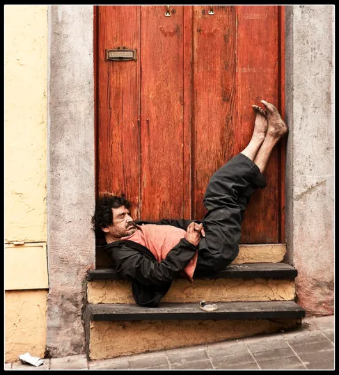

MTVM - Chương 17 (1)

Chương 17
Bên ngoài quán bar Milano tôi tìm được Bill và Mike và Edna. Edna là tên của cô gái.
“Chúng tôi bị đuổi ra,” Edna nói.
“Bởi cảnh sát,” Mike tiếp lời. “Mấy gã trong quán không ưa tôi.”
“Tôi vừa ngăn bọn họ khỏi đánh nhau,” Edna nói. “Đáng lý ra anh phải giúp tôi.”
Mặt Bill đỏ bừng.
“Quay lại đấy đi, Edna,” anh nói. “Hãy quay lại đó và nhảy với Mike.”
“Thôi, ngớ ngẩn lắm,” Edna nói. “Rồi lại có một đám đông khác ấy mà.”
“Cái lũ lợn đến từ Biarritz,” Bill nói.
“Thôi nào,” Mike nói. “Dù sao, thì nó cũng là một quán rượu. Chúng không thể chiếm cứ cả một quán rượu được.”
“Ôi anh bạn Mike nhân từ,” Bill nói. “Mấy con lợn Anh kia đến đây và sỉ nhục Mike và phá hỏng hết cả lễ hội.”
“Bọn chúng hung hăng quá,” Mike nói. “Tôi ghét bọn Anh.”
“Bọn chúng không thể sỉ nhục Mike,” Bill nói. “Mike là một anh chàng tuyệt vời. Bọn họ không được phép làm nhục Mike. Tôi không để yên thế được. Ai mà buồn quan tâm nếu anh ấy phá sản kia chứ?” Giọng anh vỡ ra.
“Ai quan tâm chứ?” Mike nói. “Tôi không quan tâm. Jake không quan tâm. Bạn có quan tâm không?”
“Không,” Edna trả lời. “Anh phá sản thật à?”
“Ừ đúng thế. Cậu không quan tâm chứ, Bill?”
Bill khoác vai Mike.
“Tớ cũng chỉ ước sao tớ là thằng vô sản thôi. Rồi tớ sẽ cho mấy thằng con hoang ấy biết tay.”
“Bọn họ là lũ người Anh thôi mà,” Mike nói. “Bọn Anh nói gì thì có gì là quan trọng đâu cậu.”
“Lũ lợn bẩn thỉu,” Bill rủa. “Tôi phải đi dọn sạch chúng nó mới được.”
“Bill,” Edna nhìn tôi. “Làm ơn đừng quay lại đó nữa, Bill. Bọn đấy ngu lắm.”
“Thì thế,” Mike nói. “Lũ ngu. Tớ biết là sẽ thế mà.”
“Bọn chúng không được nói như thế về Mike,” Bill nói.
“Anh có biết họ không?” tôi hỏi Mike.
“Không. Tôi chưa gặp bao giờ. Chúng bảo là chúng biết tôi.”
“Ôi, tôi không tài nào chịu được,” Bill nói.
“Đi nào. Minh sang quán Suizo đi,” tôi nói.
“Đấy là lũ bạn của Edna đến từ Biarritz,” Bill nói.
“Bọn họ ngu lắm,” Edna nói.
“Một trong số đó là Charley Blackman, từ Chicago,” Bill nói.
“Tôi chưa bao giờ tới Chicago,” Mike nói.
Edna cười phá lên và không ngừng lại được.
“Đưa tôi ra khỏi đây thôi,” cô nói, “mấy chàng mạt vận.”
“Đám đấy là thế nào vậy?” tôi hỏi Edna. Chúng tôi đi qua quảng trường về Suizo.
Bill đã rời đi.
“Tôi cũng chẳng hiểu đã xảy ra chuyện gì nữa, nhưng có ai đó gọi cảnh sát để đuổi Mike ra khỏi quán. Hình như có ai đó biết Mike từ hồi ở Cannes. Có chuyện gì với Mike thế?”
“Có thể là anh ta nợ họ tiền,” tôi nói. “Mà mấy thứ ấy thường khiến cho con người ta nhạy cảm khiếp lắm.”
Phía trước quầy bán vé trên quảng trường có hai hàng người đang đứng đợi. Họ đứng lên ghế hoặc cuộn mình trong chăn mềm trên mặt đất với giấy báo xung quanh. Họ đợi quầy vé mở cửa vào buổi sáng để mua vé xem trận đấu bò. Trời trong và mặt trăng lấp ló. Vài người trong hàng ngủ gà ngủ gật.
Ở quán Café Suizo chúng tôi vừa ngồi xuống và gọi Fundador thì Robert Cohn tiến đến.
“Brett đâu?” gã hỏi.
“Tôi không biết.”
“Cô ấy đi với cậu cơ mà.”
“Chắc là cô ấy về ngủ rồi.”
“Không đúng.”
“Tôi không biết cô ấy đang ở đâu.”
Mặt gã vàng ệch và tái lại dưới ánh đèn. Người gã thẳng căng.
“Cậu nói cho tôi biết cô ấy đang ở đâu.”
“Ngồi xuống đi,” tôi trả lời. “Làm sao mà tôi biết được.”
“Cái quái gì mà cậu không biết!”
“Cậu ngậm mồm đi được rồi đấy.”
“Nói cho tôi biết Brett đi đâu.”
“Tôi chẳng nói với cậu cái mẹ gì cả.”
“Cậu biết là cô ấy ở đâu.”
“Nếu biết tôi cũng không thèm nói với cậu.”
“Ôi, cậu biến mẹ nó đi, Cohn,” Mike nói từ bàn. “Brett đã đi với anh chàng đấu sĩ rồi. Họ đang hưởng tuần trăng mật đấy.”
“Anh câm ngay.”
“Ôi, cút đi!” Mike nói uể oải.
“Có đúng là cô ấy đi cùng thằng đó không?” Cohn quay sang tôi.
“Biến đi!”
“Cô ấy đi với cậu cơ mà. Có phải cô ấy đã đi với thằng đó không?”
“Cút đi!”
“Tôi sẽ làm cho cậu phải nói với tôi” – gã tiến lên – “Cậu là thằng ma cô khốn nạn.”
Tôi vung tay đấm gã và gã cúi đầu tránh. Tôi nhìn thấy khuôn mặt gã xoay lại tránh dưới ánh đèn. Gã đánh tôi và tôi ngồi thụp xuống vỉa hè. Khi tôi đứng lên được thì gã đấm tôi cú thứ hai. Tôi ngã đập lưng xuống sàn và nằm lăn dưới gầm bàn. Tôi cố ngồi dậy và tôi thấy như thể đôi chân mình biến mất. Tôi cảm thấy mình cần phải đứng lên và cố đấm lại gã. Mike đỡ tôi ngồi dậy. Có ai đó đổ cả bình nước xuống đầu tôi. Mike vòng tay quanh người tôi, và tôi nhận thấy mình đang ngồi trên ghế. Mike xoa xoa tai tôi.
“Tôi thấy cậu lạnh quá,” Mike nói.
“Anh ở chỗ quái nào thế?”
“Ồ, tôi ở đây mà.”
“Anh không muốn can thiệp à?”
“Hắn tẩn cả Mike nữa,” Edna giải thích.
“Hắn đâu hạ được tôi,” Mike nói. “Tôi chỉ nằm đấy thôi.”
“Chẳng lẽ đêm fiesta nào cũng thế này á?” Edna hỏi. “Chẳng phải đấy là ngài Cohn sao?”
“Tôi không sao,” tôi nói. “Đầu tơi hơi ong ong tẹo.”
Có hàng tá người phục vụ và người dưng tụ tập xung quanh.
“Vaya[1]!” Mike nói. “Giải tán. Đi chỗ khác chơi.”
Mấy người phục vụ xua đám đông ra xa.
“Gay cấn thật,” Edna nói. “Hắn ta chắc phải biết đấm bốc.”
“Đúng vậy.”
“Ước gì có Bill ở đây nhỉ,” Edna nói. “Tôi thích nhìn Bill bị tẩn quá. Tôi luôn mong được chứng kiến cái cảnh ấy. Anh ta trông to con thế cơ mà.”
“Tôi thì hi vọng hắn đánh ngã một anh bồi,” Mike nói, “rồi bị tóm. Tôi muốn chứng kiến cảnh ngài Robert Cohn bị tống vào tù.”
“Thôi,” tôi nói.
“Ôi, không,” Edna nói. “Anh không mong thế thật đâu.”
“Tôi nói thật mà,” Mike nói. “Tôi không phải là loại người thích bị đánh bại. Dù cho tôi chưa từng chơi mấy trò đó.”
Mike gọi một ly rượu.
“Tôi chưa bao giờ thích đi săn, cậu biết đấy. Khả năng có một con ngựa ngã lên người là rất nguy hiểm. Cậu thế nào rồi, Jake?”
“Tôi ổn.”
“Anh oách lắm,” Edna quay sang Mike. “Thế anh phá sản thật đấy à?”
“Tôi phá sản nghiêm trọng lắm,” Mike nói. “Ai tôi cũng nợ tiền. Cô không nợ tiền ai hết à?”
“Cả đống ấy chứ.”
“Tôi nợ tiền tất cả mọi người,” Mike nói. “Tối nay tôi vừa vay Montoya một trăm peseta.”
“Anh làm cái quái gì thế,” tôi nói.
“Tôi sẽ trả lại mà,” Mike trả lời. “Tôi lúc nào cũng thanh toán sòng phẳng cả.”
“Vì thế nên anh mới phá sản, đúng không?” Edna hỏi.
Tôi đứng dậy. Tôi nghe tiếng họ nói chuyện từ một khoảng cách xa. Cứ như thể tôi đang xem một vở kịch tồi.
“Tôi về khách sạn đây,” tôi nói. Rồi tôi nghe thấy tiếng họ nói về tôi.
“Anh ấy ổn chứ?” Edna hỏi.
“Mình nên đi cùng cậu ấy thì hơn.”
“Tôi ổn mà,” tôi nói. “Không cần đâu. Gặp lại các bạn sau nhé.”
Tôi rời khỏi quán café. Họ ngồi lại bàn. Tôi quay lại nhìn họ và những chiếc bàn trống không. Một người phục vụ đang ngồi bên một chiếc bàn và tựa đầu vào tay.
Tôi đi bộ dọc quảng trường trở về khách sạn, mọi thứ trông thật mới mẻ và lạ lẫm. Tôi chưa từng thấy những hàng cây này như thế. Tôi cũng chưa từng thấy những cột cờ như vậy, hay như phần mặt tiền của nhà hát. Tất cả đều lạ lẫm. Tôi thấy như cái cảm giác được trở về nhà sau một trận đấu bóng ở xa thị trấn. Tôi như đang xách chiếc va li đựng đầy những vật dụng tôi dùng cho trận đấu, và tôi đi lên phố từ nhà ga của thị trấn mà tôi đã sống cả một đời và giờ đây mọi thứ đều thật mới mẻ. Họ đang cào lại cỏ và đốt lá khô trên phố, và tôi dừng lại thật lâu và lặng lẽ ngắm nhìn. Tất cả đều lạ lãm. Rồi tôi cất bước, bàn chân tôi như thể đã đi thật lâu, và mọi thứ đều như thể đã trải qua một quãng đường dài, và tôi nghe tiếng bước chân mình như vọng lại từ một nơi nào xa xôi lắm. Tôi như bị ai đó đá vào đầu trong trận đấu. Cứ như là vậy khi tôi đi qua quảng trường. Cứ như là vậy khi tôi bước lên cầu thang của khách sạn. Leo lên cầu thang mất nhiều thời gian quá, và tôi cảm thấy như thể đang chật vật xoay xở với chiếc va li nặng trịch. Có ánh sáng ở trong phòng. Bill bước ra và gặp tôi nơi hành lang.
“Tôi bảo này,” anh nói, “cậu lên nói chuyện với Cohn đi. Hắn mềm như bún rồi, và hắn đòi gặp cậu.”
“Cứ bảo hắn biến đi cho khuất mắt tôi.”
“Thôi nào. Cậu lên gặp hắn đi.”
Tôi không muốn trèo thêm một bậc thang nào nữa.
“Cậu nhìn gì tôi thế?”
“Tôi không nhìn cậu. Cậu lên với Cohn đi. Trông hắn tệ lắm.”
“Lúc nãy cậu say khướt,” tôi nói.
“Tôi say rồi,” Bill nói. “Nhưng cậu lên gặp Cohn đi. Hắn muốn được nói chuyện với cậu.”
“Được rồi,” tôi nói. Chỉ là vấn đề trèo lên một thang gác nữa. Tôi lên gác cùng với chiếc va li ảo ảnh của mình. Tôi đi dọc hành lang tới phòng Cohn. Cửa đóng và tôi gõ cửa.
“Ai đấy?”
“Barnes.”
“Vào đi, Jake.”
Tôi mở cửa và bước vào, rồi đặt va li xuống. Căn phòng không có ánh đèn. Cohn đang nằm đó, úp mặt, trên giường trong bóng tối.
“Chào, Jake.”
“Đừng có gọi tôi là Jake.”
Tôi đứng bên cửa. Cứ như thể tôi đã trở về nhà vậy. Giờ đây những gì tôi cần là được tắm nước nóng. Một cái bồn rộng, đổ đầy nước nóng mà tôi có thể nằm duỗi chân.
“Phòng tắm ở đâu?” tôi hỏi.
Cohn khóc. Gã nằm đó, úp mặt xuống giường, bật khóc.
Gã mặc chiếc áo polo màu trắng, loại áo mà gã vẫn mặc hồi còn ở Princeton.
“Tôi xin lỗi, Jake ạ. Cậu thứ lỗi cho tôi nhé.”
“Thứ lỗi cái quái gì.”
“Xin cậu hãy tha thứ cho tôi, Jake.”
Tôi không nói gì. Tôi đứng đó bên khung cửa.
“Tôi đã điên lên. Cậu phải thấy điều đấy xảy ra như thế nào.”
“Ồ, không sao.”
“Tôi không chịu được điều ấy về Brett.”
“Cậu gọi tôi là thằng ma cô.”
Tôi không quan tâm nữa. Giờ tôi chỉ muốn được tắm nước nóng. Tôi chỉ muốn được ngâm mình trong nước nóng.
“Tôi biết. Xin cậu đừng nhớ đến nó nữa. Lúc ấy tôi đã lên cơn điên.”
“Thôi được rồi.”
Gã khóc. Tiếng gã nghe thật kỳ. Gã nằm đó trên giường với chiếc áo trắng trong bóng tối. Cái áo polo của gã.
“Sáng mai tôi sẽ đi.”
Gã khóc không thành tiếng.
“Tôi không chịu đựng được về Brett. Tôi cảm thấy tệ lắm, Jake ạ. Cứ như là ở địa ngục vậy. Khi tôi gặp cô ấy dưới kia Brett đối xử với tôi như thể tôi là kẻ xa lạ nào ấy. Tôi không chịu được như thế. Chúng tôi đã ở với nhau ở San Sebastian. Tôi nghĩ là cậu biết rồi. Tôi không thể chịu đựng được nữa.”
Gã nằm đó trên giường.
“À,” tôi nói, “tôi đi tắm thôi.”
“Cậu là người bạn duy nhất của tôi, và tôi yêu Brett lắm.”
“À,” tôi nói, “chào nhé.”
“Tôi nghĩ là chẳng có tác dụng gì cả,” gã nói. “Chẳng có tác dụng cái quái gì cả.”
“Cái gì?”
“Mọi cái. Xin cậu hãy nói rằng cậu tha thứ cho tôi, nhé, Jake.”
“Được rồi,” tôi nói. “Không sao cả.”
“Tôi thấy tệ quá. Tôi cảm thấy tệ khủng khiếp, Jake ạ. Giờ thì mọi việc kết thúc rồi. Tất cả.”
“À,” tôi nói, “chào nhé. Tôi phải đi thôi.”
Gã lăn qua và ngồi bên mép giường, rồi đứng dậy.
“Tạm biệt, Jake,” gã nói. “Cậu bắt tay với tôi nhé, được không?”
“Được chứ. Sao không?”
Chúng tôi bắt tay nhau. Trong bóng tối tôi không nhìn rõ được mặt gã.
“Ồ,” tôi nói, “gặp lại cậu sáng mai.”
“Tôi sẽ rời đi vào buổi sáng.”
“À, ừ,” tôi nói.
Tôi bước ra. Cohn đứng bên cửa phòng.
“Cậu ổn chứ, Jake?” gã hỏi.
“À, ừ,” tôi trả lời. “Tôi ổn.”
Tôi không thể tìm thấy phòng tắm. Phải mất một lúc tôi mới tìm ra nó. Có một bồn tắm sâu bằng đá. Tôi vặn vòi và không thấy nước chảy ra. Tôi ngồi xuống bên bồn tắm. Khi tôi đứng lên để đi ra tôi nhận thấy mình đã cởi giày ra. Tôi nhìn quanh rồi cũng tìm thấy đôi giày rồi mang chúng xuống lầu. Tôi tìm thấy phòng mình và đi vào và cởi quần áo và lên giường nằm.
[1] Tiếng Tây Ban Nha trong nguyên bản: Đi đi!
Comments